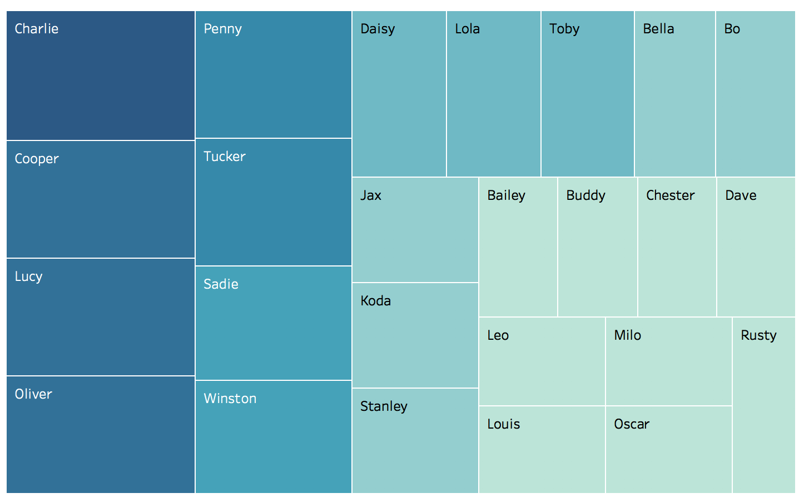

The first analysis I needed to do urgently was to find out the most common dog names in the dataset. My friend and colleague is getting a new puppy and I wanted to make sure he had this information before picking a name for this atomically cute little girl:
I did this using Tableau (because it’s the fastest way I know how to produce a tree map):

Some other insights about this data:
Likes and retweets of dog breeds - The number of favorites per tweet (in general) is way higher than the number of retweets. What was interesting, was when I compared the most favorited dog breeds to the most retweeted dog breeds, the lists look quite different.
Dog-identifying algorithm - when we look at the number of tweets where the P1 algorithm predicted that the image was NOT a dog, but there was a name in the name column (indicating that the photo actually did show a dog), the false negative rate is actually pretty high.